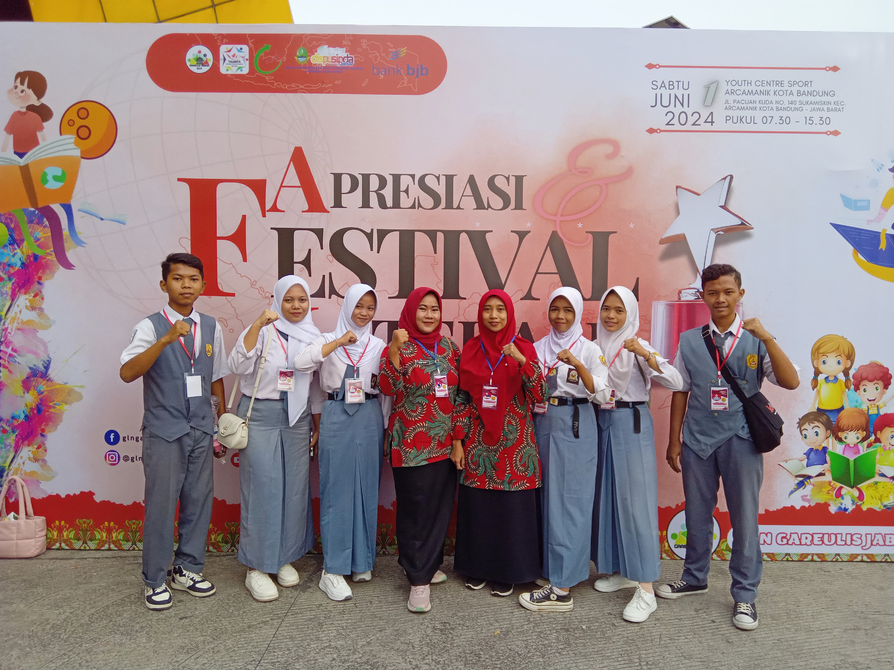
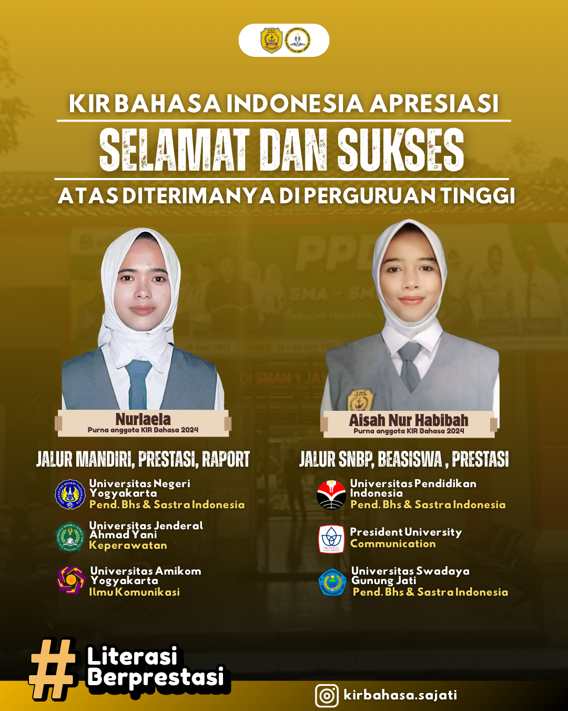

Berita KIR

Awal Terbentuknya KIR Bahasa Indonesia
Mei 2024
KIR Bahasa Indonesia SMAN 1 Jatibarang dibentuk pada bulan Mei 2024...
Read More
Dari Doa Hingga Juara 2
2024
SMAN 1 Jatibarang meraih juara 2 dalam perlombaan GLS Tingkat Kabupaten Indramayu...
Read More
1 Nyawa 3 Universitas
Oktober 2025
Alumni KIR Bahasa Indonesia angkatan pertama berhasil diterima di tiga perguruan tinggi...
Read More